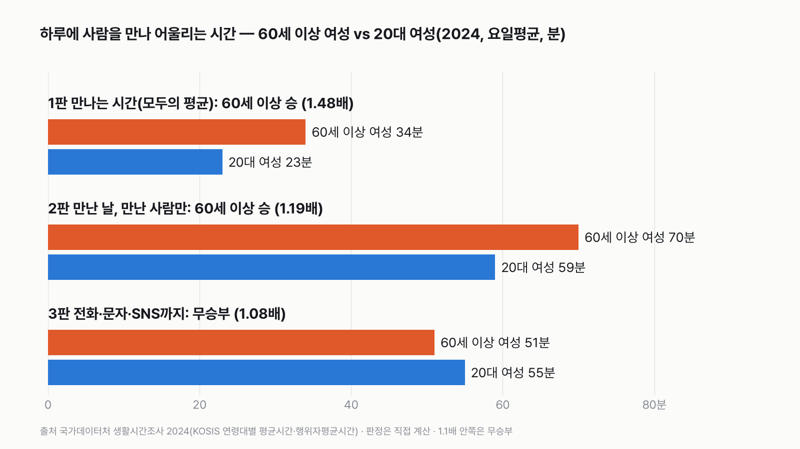
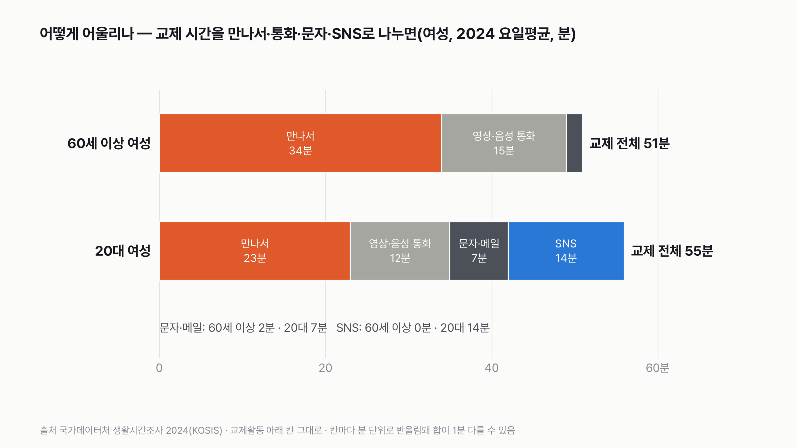
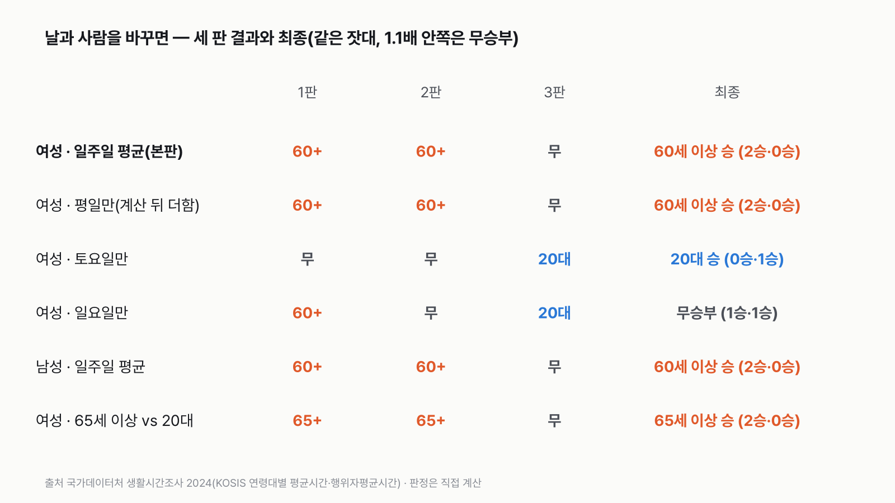
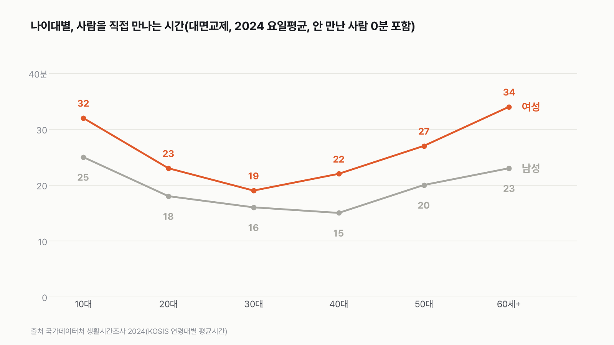

60세 이상 여성 vs 20대 여성 실험맨, 하루 사람을 만나 어울리는 시간은 누가 더 길까
하루 중 집 밖의 사람과 어울리는 시간은 생각보다 짧아요. 그 짧은 시간을 누가 더 길게 쓸지 골라 주세요.

독자 투표
60세 이상 여성 실험맨과 20대 여성 실험맨, 하루 사람을 만나 어울리는 시간은 누가 더 길까?
3줄 요약
- 이번엔 실험맨 두 명이 나서요. 60세 이상 여성과 20대 여성이에요. 하루에 사람을 만나고, 통화하고, 메시지를 주고받는 시간을 견줘요.
- 조사에서 '교제'로 분류한 시간만 세요. 사람을 직접 만나고, 통화하고, 문자나 SNS로 이야기한 시간이에요.
- 직접 만나는 시간, 만난 날 만난 사람끼리, 통화·문자·SNS까지 넓혀서 세 판으로 겨뤄요.
조건과 규칙
- 왜 이 두 사람인가: 실험맨은 편마다 다른 평균 한국인으로 나서요. 이번엔 같은 여성끼리 나이만 다르게 세웠어요. 20대는 학교와 첫 직장 시기, 60세 이상은 퇴직과 자녀 독립 시기라 하루의 짜임이 크게 달라요. 같은 계산을 남성으로도 돌려 같이 놓았어요.
- 60세 이상: 2024년 표에는 60~69세 칸이 없어서 60세 이상(70대·80대 포함)을 썼어요.
- 세는 시간: 조사에서 '교제'로 분류한 시간이에요(직접 만남, 영상·음성 통화, 문자·메일, SNS). 종교 모임, 봉사, 경조사는 다른 칸이라 넣지 않았어요.
- 세 판(모두 2024년, 일주일 평균)
- 1판: 사람을 직접 만난 시간. 그날 아무도 안 만난 사람(0분)까지 넣은 평균이에요.
- 2판: 그날 사람을 직접 만난 사람끼리, 만난 시간 평균이에요.
- 3판: 직접 만남에 영상·음성 통화, 문자·메일, SNS 대화까지 더한 교제 전체예요.
- 판정: 판마다 더 긴 쪽이 짧은 쪽의 1.1배 이상이면 승, 1.1배가 안 되면 무승부예요. 최종은 이긴 판 수로 정해요.
결과 요약
3판 60세 이상 2승 1무 → 최종 60세 이상 여성 승
- 사람을 직접 만나는 시간은 60세 이상 여성이 하루 34분, 20대 여성이 23분이에요. 60세 이상이 1.48배 길어요.
- 그날 사람을 만난 사람끼리 보면 60세 이상 70분, 20대 59분이에요. 여기서도 60세 이상이 1.19배 길어요.
- 통화·문자·SNS까지 넣으면 20대가 55분으로 60세 이상(51분)을 앞질러요. 다만 1.08배라 규칙대로 비겨요.
그래서? 직접 만나는 쪽은 60세 이상이 확실히 길고, 20대는 SNS와 문자로 더 많이 어울려요. 20대 여성의 SNS 대화는 하루 14분, 60세 이상은 거의 0분(반올림 0)이에요. 그런데 토요일만 떼어 보면 20대가 이겨요. 토요일엔 20대 여성이 직접 만나는 시간이 35분으로 늘어 60세 이상(36분)과 거의 같아져요.
독자 예상 vs 데이터 결과
60세 이상 여성 실험맨과 20대 여성 실험맨, 하루 사람을 만나 어울리는 시간은 누가 더 길까?
데이터로 보면 60세 이상 여성. 직접 만나는 시간은 60세 이상 여성 34분, 20대 여성 23분(1.48배)이에요. 만난 사람끼리도 70분 대 59분(1.19배)이에요. 통화·문자·SNS까지 넣으면 20대가 4분 길지만 1.1배 안쪽이라 비겨요. 2승 1무로 60세 이상 승이에요.


하루 11분 차이를 1년으로 모으면 약 67시간이에요. 60세 이상 여성은 20대 여성보다 1년에 사흘 가까이를 사람을 직접 만나는 데 더 써요.
| 판 | 60세 이상 여성 | 20대 여성 | 배수 | 승자 |
|---|---|---|---|---|
| 1판 직접 만나는 시간(모두의 평균) | 34분 | 23분 | 1.48배 | 60세 이상 |
| 2판 만난 날, 만난 사람끼리 | 70분 | 59분 | 1.19배 | 60세 이상 |
| 3판 통화·문자·SNS까지 | 51분 | 55분 | 1.08배 | 무승부 |
| 최종 | 2승 1무 → 60세 이상 여성 승 |
판마다 긴 쪽을 짧은 쪽으로 나눴어요. 1.1배 이상이면 긴 쪽이 이기고, 안 되면 비겨요. 이 규칙이면 결과는 60세 이상 여성 승이에요.
1판 직접 만나는 시간: 60세 이상 승(1.48배)
60세 이상 여성은 하루 평균 34분 동안 사람을 직접 만나요. 20대 여성은 23분이에요. 이 평균에는 그날 아무도 만나지 않은 사람의 0분이 들어 있어요. 그래서 '얼마나 오래'와 '얼마나 많은 사람이'가 함께 섞인 숫자예요.
만나는 사람의 비율부터 달라요
그날 사람을 직접 만난 사람의 비율은 60세 이상 여성이 48.3%, 20대 여성이 38.8%예요. 60세 이상은 두 명 중 한 명 가까이가 하루에 누군가를 만나고, 20대는 다섯 명 중 두 명 정도예요. 1판의 차이는 상당 부분 여기서 와요.
2판 만난 사람끼리: 60세 이상 승(1.19배)
그날 만난 사람만 놓고 보면 60세 이상 여성은 70분, 20대 여성은 59분 어울렸어요. 한 번 만나면 1시간 넘게 이야기를 나누는 쪽이 60세 이상이에요. 차이는 1판보다 좁아졌지만 여전히 1.1배를 넘어요.
3판 통화·문자·SNS까지: 무승부(1.08배)
교제를 넓게 보면 순서가 뒤집혀요. 20대 여성의 교제 전체는 55분, 60세 이상은 51분이에요. 20대가 4분 길지만 1.1배에 못 미쳐 비겨요. 20대는 직접 만남 23분에 영상·음성 통화 12분, 문자·메일 7분, SNS 14분을 더해요. 60세 이상은 직접 만남 34분에 통화 15분, 문자 2분이고 SNS 대화는 거의 0분(반올림 0)이에요.


통화는 60세 이상이 더 길어요
영상·음성 통화만 보면 60세 이상 여성이 15분으로 20대(12분)보다 길어요. 메시지를 쓰기보다 목소리로 안부를 묻는 쪽이에요. 20대는 글자로 하는 교제(문자 7분 + SNS 14분)가 21분으로, 통화보다 길어요.
주말엔 20대가 따라잡아요
날을 바꾸면 결과가 달라져요. 평일만 보면(계산 뒤 더함) 60세 이상 여성이 33분, 20대가 19분이라 차이가 더 커요(1.74배). 그런데 토요일에는 36분 대 35분으로 거의 같아지고, 교제 전체로는 20대가 69분으로 60세 이상(54분)을 1.28배 앞서요. 토요일만 보면 최종 승자는 20대예요. 일요일은 1승 1무 1패로 비겨요. 다만 1판이 딱 1.10배라, 몇십 초 차이로 20대 승이 될 수도 있어요.


남성도 같은 모양이에요
같은 잣대를 남성에게 대면 60세 이상 남성 23분, 20대 남성 18분으로 60세 이상이 이겨요(1.28배). 만난 사람끼리는 60분 대 54분(1.11배)으로 아슬아슬하게 60세 이상 승이에요. 반올림에 따라 무승부가 될 수 있는 차이예요. 교제 전체는 34분 대 34분으로 같아요. 남성도 2승 1무로 60세 이상이 이겨요. 다만 남성은 모든 나이에서 여성보다 직접 만나는 시간이 짧아요.
나이대별로 보면 U자예요
직접 만나는 시간을 나이대별로 늘어놓으면 10대 여성 32분에서 30대 19분까지 내려갔다가, 50대 27분, 60세 이상 34분으로 다시 올라가요. 30대·40대에 가장 짧아요. 일과 육아가 몰리는 시기와 겹쳐요. 남성도 10대 25분에서 40대 15분까지 내려갔다가 60세 이상 23분으로 올라가요.


65세 이상으로 좁히면 차이가 더 벌어져요
60세 이상 대신 65세 이상 여성으로 바꾸면 직접 만나는 시간이 36분으로 더 길어요. 20대와 견주면 1.57배예요. 나이가 들수록 사람을 만나는 시간이 길어지는 흐름이 60세 이상 안에서도 이어져요.
차이가 큰 날과 사라지는 날
차이는 평일에 가장 커요(1.74배, 계산 뒤 더함). 20대가 일과 학교에서 벗어나는 토요일에는 직접 만나는 시간이 36분 대 35분으로 거의 같아져요. 일과 학교가 있는 날과 없는 날의 차이와 같은 방향이지만, 이 표만으로 이유를 가를 수는 없어요. 이 조사는 누가 더 외로운지, 누구의 관계가 더 깊은지도 알려 주지 않아요. 하루에 몇 분을 쓰는지만 보여 줘요.
숫자를 다시 보며
저는 20대가 넉넉히 이길 줄 알았어요. 일지를 열어 보니 직접 만나는 쪽은 60세 이상이 꽤 앞섰고, 20대는 화면 속 대화를 더해 거의 따라붙었어요. 오늘 내가 누군가와 얼굴을 보고 이야기한 시간은 몇 분이었을까요?
이 숫자는 어디서 왔나요
출처
어떻게 셌나요
- 자료: 국가데이터처 생활시간조사 2024. 10세 이상 가구원이 이틀 동안 10분 단위로 쓴 시간일지를 모아 낸 값이에요. 5년마다 하는 조사예요.
- 평균시간: 그날 그 행동을 안 한 사람(0분)까지 넣은 평균이에요(1판·3판).
- 행위자평균시간: 그날 그 행동을 한 사람만의 평균이에요(2판).
- 행위자비율: 그날 그 행동을 한 사람의 비율이에요.
- 교제 분류: 교제활동 아래에 대면교제, 화상·음성교제, 문자·메일교제, 사회관계망을 통한 교제, 기타 교제가 있어요. 2판까지는 대면교제만, 3판은 교제활동 전체를 썼어요. 같이 사는 가족과 함께 보낸 시간이 교제로 잡히는지는 KOSIS 표 주석으로 확인하지 못했어요.
- 요일: 본판은 일주일 평균(요일평균)이에요. 토요일·일요일 값은 점수 밖 비교, 평일 값은 계산 뒤 더한 비교예요.
- 판정: 긴 쪽 ÷ 짧은 쪽이 1.1배 이상이면 긴 쪽 승, 안 되면 무승부예요.
| 항목 | 값 | 잰 것 / 가정 |
|---|---|---|
| 대면교제 평균시간(60세 이상 여성 · 20대 여성) | 34분 · 23분 | 잰 것(시간일지) |
| 대면교제 행위자평균시간 | 70분 · 59분 | 잰 것(시간일지) |
| 교제활동 전체 평균시간 | 51분 · 55분 | 잰 것(시간일지) |
| 대면교제 행위자비율 | 48.3% · 38.8% | 잰 것(시간일지) |
| 60세 이상을 '60대'의 대신으로 씀 | 70대·80대 포함 | 가정(2024년 표에 60대 칸 없음) |
| 1년 = 하루 × 365 | 67시간 환산에만 | 가정 |
한계 6가지
이 데이터로 말할 수 없는 것
- 60세 이상에는 70대·80대가 함께 들어 있어요. 60대만의 값은 2024년 표에 없어요. 65세 이상으로 좁히면 60세 이상 쪽이 더 길어져서, 60대만 따로 보면 차이가 조금 줄어들 수 있어요.
- 시간일지는 10분 단위로 적고 표는 분 단위로 반올림돼요. 3판의 4분 차이(1.08배)는 반올림을 감안하면 1.06~1.099배 사이라, 1.1배에 닿지 않아요(판정은 그대로).
- 일지에는 한 번에 가장 주된 행동만 적혀요. 밥을 먹으며 친구와 이야기했다면 '식사'로 잡혔을 수 있어요. 그래서 실제 어울린 시간은 이 숫자보다 길 수 있어요.
- 이틀 일지를 모은 평균이라 한 사람의 평소 습관과는 달라요.
- 같이 사는 가족과의 대화가 교제로 잡히는지는 KOSIS 표 주석으로 확인하지 못했어요. 가족과 함께 사는 비율이 다른 두 나이대라, 이 분류에 따라 차이가 달라질 수 있어요.
- 2024년 조사 하나만 썼어요. 5년 전 조사와 비교하지 않았어요.
다음 대결
대결 다 보기
판다 vs 실험맨
판다 vs 실험맨, 다섯 판 승부로 하루에 '더 많이 먹는' 쪽은?
A판다vsB실험맨
투표하러 가기

배달·외식비 vs 스마트폰
실험맨이 1년 동안 사 먹는 밥값(배달 포함)으로 최신 스마트폰을 살 수 있을까?
A산다vsB못 산다
투표하러 가기

20대 여성 vs 65세 이상 남성
20대 여성 실험맨 vs 65세 이상 남성 실험맨, 네 판 승부로 하루 운동을 더 많이 하는 쪽은?
A20대 여성vsB65세 이상 남성
투표하러 가기

짜장면 vs 치킨
짜장면 vs 치킨, 다섯 판 승부로 값이 더 많이 오른 국민 음식은?
A짜장면vsB치킨
투표하러 가기

출퇴근 vs 연차
실험맨이 1년 동안 출퇴근에 쓰는 시간과 연차 휴가로 쉬는 시간, 세 판 승부로 더 긴 쪽은?
A출퇴근vsB연차 휴가
투표하러 가기

경복궁 vs 에버랜드
경복궁 vs 에버랜드, 다섯 판 승부로 1년에 사람이 더 많이 찾는 곳은?
A경복궁vsB에버랜드
투표하러 가기

마라톤 세계기록 vs 서울 버스
마라톤 세계기록 속도로 뛰는 사람 vs 서울 시내버스, 세 판 승부로 더 빠른 쪽은?
A세계기록 사람vsB서울 버스
투표하러 가기

실험맨 vs 수영장
실험맨 혼자 1년 쓴 수돗물로 25m 수영장 레인 한 줄을 채울 수 있을까?
A채운다vsB못 채운다
투표하러 가기
새 글 나오면 받아 보기
피드 리더 앱에 이 사이트 주소를 한 번 넣어 두면, 새 글이 올라올 때 앱에 떠요. 가입이나 메일 주소는 필요 없어요.
받는 법 보기
- 피드 리더 앱을 하나 골라요. 새 글을 모아 보여 주는 앱이에요. 예를 들면 Feedly나 Inoreader가 있어요. 둘 다 무료고 웹·휴대폰에서 써요.
- 앱에서 '구독 추가'(+)를 누르고 아래 주소를 붙여 넣어요.
- 끝이에요. 새 글이 올라오면 앱 목록에 떠요.
https://protofu.github.io/opendata-insight/feed.xmlFeedly를 쓴다면 여기를 눌러 바로 추가할 수도 있어요.